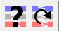
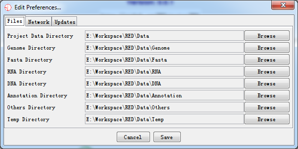

RED---RNA Editing Detector
A program to detect and visualize RNA editing events at the genomic scale using next-generation sequencing (NGS) data
1 Introduction
1.1 What is RED
RNA editing is one of the post- or co-transcriptional processes with modification of RNA nucleotides from their genome-encoded sequence. In human, RNA editing event occurs mostly by deamination of adenosine to inosine (A-to-I) conversion through ADAR enzymes.
RED (RNA Editing sites Detector) is a Java-MySQL software to detect and visualize RNA editing events at the genome scale using next-generation sequencing (NGS) data. The software integrates multiple rule-based and statistical filters to remove spurious variants, to identify reliable RNA editing sites. Additionaly, a potential RNA editing site can be visualized in the context of reference genome (/gene).

Fig. 1.1 A screen shot of RED
RED is a well-designed Java-based Graphic User Interface (GUI), which works on mainstream operating systems (e.g., Windows, Linux and Mac OS X). To make it more efficient, everlasting and faster-saving, we use MySQL DataBase Management System (DBMS) to manipulate highthroughput of NGS. In addition, we use functions in R to perform statistical analysis. However, you never manipulate R and MySQL when you use RED. All of the operation relative to R and MySQL are executed by RED automatically. RED enables the analysis of RNA editing events with two modes (illustrated below) using VCF files from different sources and the presentation of full mapped sequence data using BAM file:
- Detection of RNA editing sites using RNA-seq data alone (i.e., De Novo mode)
- Detection of RNA editing sites using both DNA-sequencing data (e.g., whole exome sequencing) and RNA-Seq data (i.e., DNA-RNA mode)
1.2 Prerequisites
The following programs or environment should be installed and configured before RED runs properly. Here are the recommended versions.
- Java Runtime Environment (jdk 1.6.0_43 or later)
- MySQL Database Management System (MySQL 5.1.73 or later)
- R Environment (R 3.0.2 or later)
For Windows System (Windows 7 Ultimate SP1), we test our software by the following versions:
- Java Runtime Environment (jre build 1.6.0_43-b01)
- MySQL Database Management System (MySQL 5.6.19)
- R Environment (R 3.1.1 for Windows)
For Linux System (CentOS release 6.5 Final), we test our software by the following versions:
- Java Runtime Environment (jre build 1.8.0_25-b17)
- MySQL Database Management System (Ver 14.14 Distrib 5.1.73)
- R Environment (R version 3.0.2)
For Mac OS X (Version 10.8.5), we test our software by the following versions:
- Java Runtime Environment (jre build 1.7.0_51-b13)
- MySQL Database Management System (Ver 14.14 Distrib 5.1.73)
- R Environment (R version 3.0.2)
1.3 Installation
1.3.1 Install Java Runtime Environment
Java Runtime Environment (JRE) is basically the Java Virtual Machine (JVM) where your Java programs run on. It also includes browser plugins for Applet execution. Java Development Kit (JDK) is the full featured Software Development Kit (SDK) for Java, including JRE, and the compilers and tools (e.g., JavaDoc, and Java Debugger) to create and compile programs. In order to run RED, we need to install either JRE or JDK.
- JDK:
http://www.oracle.com/technetwork/java/javase/downloads/jdk8-downloads-2133151.html
- JRE:
http://www.oracle.com/technetwork/java/javase/downloads/jre8-downloads-2133155.html
1.3.2 Install MySQL Database
RED stores most of the data into database (except for BAM file) so that we can reuse the data for research. MySQL is one of the best choice since it is free and efficient. Although default configuration in MySQL can ensure your server works well, you could edit the configure file to gain better performance. For Linux System, edit the parameters in the file of /etc/my.cnf (default configuration path). For Windows System, you could use MySQL Workbench to configure your server efficiently.
- MySQL:
http://dev.mysql.com/downloads/mysql/
1.3.3 Install R Environment
R is a free software environment for statistical computing and graphics. It compiles and runs on a wide variety of UNIX platforms, Windows and MacOS. To download R, please choose your preferred CRAN mirror.
The package of "rJava" in R is required,which ensures connection between R and Java. Open a R Window and type:
install.packages(rJava)
The package will be installed automatically with Internet connection.
- R:
1.4 Terminology
Several terms are used throughout the RED documentation and program. To make it more easier to be understood, we have a simple introduction.
1.4.1 Molecular Biology
- RNA Editing
RNA editing is one of the post- or co-transcriptional processes with modification of RNA nucleotides from their genome-encoded sequence.
- Reference Genome
Reference genome is a comprehensive, integrated, non-redundant, well-annotated set of reference sequences including genomic, transcript, and protein (hg19).
- Sequence Alignment Map (.bam/.sam) File
SAM format is a text format for storing sequence data in a series of tab delimited ASCII columns, while BAM format stores the same data in a compressed, indexed, binary form. Since SAM file is several times larger than BAM file, so we recommend you store data with BAM format.
- Variant Calling Format (.vcf) File
VCF is a text file format (most likely stored in a compressed manner) which contains meta-information lines, a header line, and then data lines each containing information about a position in the genome.
1.4.2 Program
- Data Set
A data set stores a set of data imported from a single file. It is an efficient way to be handled and presented. In RED, a data set refers to a BAM/SAM file that contains sequence alignment/map information, which is displayed in the context of reference sequence.
- Data Group
A data group contains two or more data sets with different biological conditions to make it compared for some purposes (e.g., comparing RNA editing sites identified in cancer tissues and adjacent normal tissues). In a given data group, we aggregate data sets needed for research and save the compared results. This function has yet to be completed in the current release , and we will make it worked in the next version.
- Site / SiteBean
A site represents a potential RNA editing site which contains information of chromosome, position, reference base and alternative base, while a site bean contains all information derived from a VCF file.
- Site Set
A site set stores all RNA editing sites from an initial VCF file (i.e., without using any filter). It is also the root of a pipeline tree when performing any filter to the original site set. The site set is generated when a VCF file has been input into database.
- Site List
A site list is a subset of the site set. A set of site lists are generated by one or more filters implemented in RED, which store the remaining RNA editing sites after each step of filteration. We can generate site lists from another site list in which one or more filters were applied.
2 Getting Started
2.1 Starting a New Project
Before starting a new project, make sure that you have configured all running environments mentioned in the Prerequisites section. You can either select a genome or connect to MySQL database when starting a new project, but both should be performed to make the program work properly.
2.1.1 Select a Genome
To start a new project, you may first select a new genome of interest. When the program is open, select File > New Project… to select a new genome. If there isn't any genome file in the local host, a warning notification will pop up as the following illustrated and tell you what you should do.

Fig. 2.1 Warning when there is no genome in genome directory
If you choose to download a new genome, click Import New button and find out the new genome you need.
Fig. 2.2 Select a new genome to download
After the download completes, the following dialog of Select Genome… will pop up.
Fig. 2.3 Select a new genome to import
It should be noted that it may take a little bit longer when importing genome data into RED for the first time. We have a cache mechanism to make it faster when you reload the same genome. Once you have selected your genome and it has been loaded, you can move on to the next step.
2.1.2 Connecting to MySQL Database Management System
A simple database connection dialog will pop up when you select File > Connect to database… as the following illustrated.

Fig. 2.4 Connect to MySQL DBMS
With successful connection, the program will detect whether there is an database with imported data before and then make a relevant notification for the next step.
- Null in Database
If the database is empty (or null), the software will tell what you need to prepare for data import.
Fig. 2.5 Data import notification

Fig. 2.6 Data import dialog
A simple explanation for each kind of importing file is shown when press Browse button. It helps you locate what kind of data file should be imported.
Fig. 2.7 Importing data
After selecting all paths, press Import button and wait for a moment, all data will be imported to database.
- Data Which Don't Meet Your Demand in Database
After database is connected using database connection panel, Fig. 2.6 is present by selecting File > Import Data > Database… and you can import another data for further demand.
- Data Which Meets Your Demand in Database

Fig. 2.8 Notification of successful database connection and data loaded to database
If your data has been loaded into database, then you can filter spurious variants for detecting potential RNA-editing sites.
2.1.3 Loading a BAM/SAM File (using both RNA-Seq and DNA-sequencing data; or only RNA-Seq data)
In order to make a full landscape of all potential RNA-editing sites at the genomic scale, a sequence alignment/map file (BAM/SAM), as well as variant calling format file (VCF), which has been imported to database, are needed. All potential RNA editing sites will be shown in Chromosome Panel.
However, BAM/SAM file should be kept where it is since our project file will store its file path and open it for the next time when you use RED.
2.1.4 Setting Filters
Eight filters have been integrated in RED, see Filters section for more detail. Before setting filters, database must be connected successfully. An initial set of variation sites (Site Set) will be present as a root tree named All Sites within Directory Panel. When one filter is performed, a leaf connected to this tree will be generated associated with the remaining RNA-editing sites.
For the tested data, we have imported BJ22.snvs.hard.filtered.vcf (RNA VCF file) and BJ22_sites.hard.filtered.vcf (DNA VCF file) into database which has 252086 variants.
Fig. 2.9 RNA-seq data and potential RNA editing sites within Directory Panel
Then we execute the Quality Control (QC) Filter with quality greater than 20 and coverage greater than 6.

Fig. 2.10 Quality Control Filter options
After filtration (for a few seconds), there was a subset of editing sites remained and a leaf was produced within Directory Panel to describe and check what you have filtered out as illustrated below. At the same time, the Genome Panel and Chromosome Panel will present the RNA-editing sites by different colours.

Fig. 2.11 After executing basic filter, a site list is generated
2.1.5 Reports
For now, we only support exporting editing sites information in text format. In the Directory Panel, right-click the site list which you want to export, and select Show Sites List, Show Variant Distribution or Show Sites Distribution to make a report. Please see Site Set and Site Lists section for more details.
2.2 Opening an Existing Project
To open an existing project, select File > Open Project from the main menu. All RED project files use a .red file extension. A RED project stores all of the data set, data group, site set and site list information associatedwith your data. It also remembers which data tracks were visible. See Saving a Project for more details.
Although it stores the name of the genome you were using, it doesn't contain the actual genome data. If you are using RED on a new machine, it will automatically download and install the required genome when you open a project file. If you want to use RED when not connected to a network, you need to ensure that the correct genome has been installed locally. Once downloaded, genomes will be cached on your machine for future use.
3 Visualisation
One of the most important features in RED is visualization. We provide a variety of information for visualizing RNA editing events. In total, there are six panels shown in the main window.
3.1 Main Window
The main window consists of Toolbar Panel, Directory Panel,Genome Panel, Feature Panel, Chromosome Panel and Status-bar Panel.Explained in the following figures and tables.

Fig. 3.1 Main window
| Panel | Explanation |
|---|---|
| 1 | Toolbar Panel |
| 2 | Directory Panel |
| 3 | Genome Panel |
| 4 | Feature Panel |
| 5 | Chromosome Panel |
| 6 | Status-bar Panel |
3.2 Toolbar Panel
Fig. 3.2 Toolbar panel
The toolbar is a convenient way to access commonly used functions, which you can also access via the main menu or keyboard shortcuts.

These buttons allow you to change the data tracks between showing just reads, just sites or both reads and sites
- 
These buttons bring up either the Find Feature, or Goto Position search tools

Drag the tag and change the data zoom level.
3.3 Directory Panel
The directory panel gives you a quick overview of your Annotation sets, Data Sets, Data Groups, Site Set and Site Lists.

Fig. 3.3 Directory panel
The view consists of a set of folders which can be expanded or collapsed either by double clicking them or by clicking on the little + or - symbols which may appear next to them.
3.3.1 Data Sets and Data Groups(abridged from SeqMonk)
You can also use the Directory Panel to perform operation on Data Sets and Data Data Groups.
In the Directory Panel, if you click on any Data Set entry you will see it become highlighted. If that Data Set is currently visible in the Chromosome Panel, it will have a red line at the top and bottom of the track so you can quickly see where it is.
If you right click on any Data Set you will see a popup menu of options appear.

Fig. 3.4 Popup menu of DataSet
The options are:
- Show Track in Chromosome Panel
This is a toggle option to turn a track on or off in the Chromosome Panel.If the track is currently visible you will see a tick next to this option. New tracks are added at the end of the current set of tracks. For more flexible options for adding/removing tracks use the View > Set Data Tracks option in the main menu.
- Rename
This allows you to change the name of a data set or data group.
- Delete
You can delete a data group since it does not store real data, but now allow for data sets.
- Properties
This shows basic information about your data set or data group, including file name, file path, total reads, number of positive reads and negative reads, etc.
3.3.2 Annotation Sets
The annotation sets folder will show you an entry for the core genome annotations. If you import extra annotation, this will show up in this folder. In the current version, we don’t support importing other annotation files except for .genome file from IGV server.
Fig. 3.5 Popup menu of AnnotationSet
Right-clicking on an entry in this folder brings up a popup menu with the following options:
- Show Track in Chromosome View
This is a toggle option to turn a track on or off in the Chromosome Panel. If the track is currently visible you will see a tick next to this option. You can also use Edit > Feature Panel option in the main menu.
- Properties
Brings up the number of features in each chromosome in this annotation set.
- Rename
Allows you to change the name of this annotation set.
- Delete
You can delete this annotation from your project (not allowed for Core Genome annotation).
3.3.3 Site Set and Site Lists
When you have imported a VCF file called from BAM file, a site set will automatically be initialized and named All Sites. When you apply filters (no matter one or more) to the site set, a site list will be generated to show the results after filtration.

Fig. 3.6 Popup menu of Site Lists
Right-clicking on an entry in this folder brings up a popup menu with the following options:
- Show Sites List
Shows all potential RNA editing sites in a table with filtering description and comments. The table consists of the following information: chromosome, position, reference base and alternative base.
- Show Sites Distribution
Shows all potential RNA editing sites distribution in a karyogram histogram. See Sites Distribution(in a karyogram) section for more details.
- Show Variant Distribution
Shows all RNA editing variant type distribution in a histogram. See Variant Distribution section for more details.
- Rename
Allows you to change the name of site list (now allowed for Site Set).
- Edit Comments
Allows you to edit comments of a site list. It mainly contains filtering information in default.
- Delete
Deletes this annotation from your project (not allowed for Site Set)
3.4 Genome Panel
The genome panel shows an overview of all chromosomes from the reference genome. Once you have performed RNA editing filters, it will show a whole genome view of RNA editing sites. We showe the chromosomes in human only (chromosome 1 to 22, X, Y, M).
Fig. 3.7 Genome panel before executing filters

Fig. 3.8 Genome panel with RNA-editing sites highlighted
A karyogram view of all chromosomes was shown according to their relative sizes. Each rectangle represents a chromosome. The highlighted box shows a region currently being shown in the Chromosome Panel. You can use the Genome Panel to move the Chromosome Panel to a different chromosome or to a different region of current chromosome.
3.5 Chromosome Panel
The chromosome panel is the most complex view in RED and is also where you're likely to pay the most of your attention to. There are a lot of options for changing the information which it showed to you.

Fig. 3.9 The chromosome panel when current track length is longer than screen pixel
The chromosome panel is mainly divided into two kinds of tracks: Annotation Track and Data Track. Annotation tracks show annotated information for genome, including feature track, sequence track and cytoband track; Data tracks show mapped reads from NGS data, mainly including RNA-seq data and DNA-sequencing data.
However, the top of the display is a line of text which tells you what genome and chromosome you are currently viewing. It also lists the current position and provides the length of the current view.
In the chromosome panel, you can left-click the mouse to zoom in and right-click to zoom out. If you put your mouse over a read it will turn yellow and show the read’s information on status bar.
3.5.1 Annotation Track
3.5.1.1 Feature track
The feature track mainly shows the feature from NCBI RefSeq Genes Database, which includes the information of transcription, coding region and exons. Features in this track are coloured in blue.
Fig. 3.10 Feature track with one complete feature
The feature is represented as a filled block of colour. There are three kinds of height in a feature. The most oblate region stands for the transcribed region, the fattest region stands for exons region within this feature, while the height between transcription and exon is the coding region.
If you put your mouse over a feature it will display the feature name below the track. If you want to see more details about the feature you can double-click on the feature and a information window will open up for this feature.
Fig. 3.11 A popup dialog when double-clicking on the feature
In this popup window, you can double-click on the location to have an overview of this feature.
3.5.1.2 Sequence Track
The sequence track shows bases of reference genome generated from a .fasta file. Each sequence in the FASTA file represents the sequence for a chromosome. The sequence name in the FASTA file is the chromosome name that appears in the Genome Panel.
Fig. 3.12 Bases information of reference genome
3.5.1.3 Cytoband Track (not available yet)
The Cytoband file format is used to specify the cytobands for an imported genome. We uses this file to draw the chromosome ideograms for the genome, with the idea put forward by IGV. The cytoband track is available in the next version.
3.5.1.4 Data Track
Data tracks can show three kinds of types.
- Show only mapped reads
- Show only RNA editing sites
- Show mapped reads and RNA editing sites
If the mapped reads are shown, there are two kinds of display status:Block Status and Real Base Status, which depend on the whole view length of current chromosome. If the length is short enough to be able to have a whole view of real base of the mapped reads, then the real bases will be displayed for each position.
3.5.2.1 Blocks Status
RED shows sequence reads as gray blocks with the reads were mapped/aligned with the reference genome. Fig. 3.9 and the following figure show read as blocks status.The former view length is 3.05 MB while the latter is 7.55KB (1MB = 1000 KB = 1000000 bp).
Fig. 3.13 Block status in small areas
If you put your mouse over a read it will be highlighted in yellow. The status bar at the bottom will show the details of the position and length of the read.
3.5.2.2 Real Base Status
In the real base status, the reference genome base and mapped read base will appear at the same time. In order to distinguish all bases, we show bases in different colours.
Fig. 3.14 A given sequenced regions with bases shown in different colors
- Green = 'A'
- Black = 'G'
- Blue = 'C'
- Red = 'T'
Thus, it is convenient to discover whether a position has editing base and other editing information. We will provide more editing information with the following RED version released.
3.5.2.3 Show Reads And Sites
If the mapped reads and RNA editing sites are available, we can have a accurate view of a RNA editing event position which have been highlighted in a different coloured box.
Fig. 3.15 Highlighted RNA editing sites with a coloured box
3.5.3 Change Data Tracks
You can change which data tracks are shown and the order of the tracks by selecting Edit > Set Data Tracks, or by using the toolbar shortcut.

Fig. 3.16 Select data tracks displayed on the screen
The list of tracks on the right is the tracks which have been displayed in the chromosome panel. The lists on the left are tracks which aren't currently being displayed. You can move tracks from one side to another, and move the visible tracks up and down the list to get the set you want.
In addition to the dialog for changing the displayed data tracks you can also add and remove individual tracks by using the popup menus available in the Directory Panel.
3.6 Status-bar Panel

Fig. 3.17 The status bar
The status bar is a notification area which usually shows relative information, which is changed by at any time when the mouse is moved over from an object to another object.
Near the right hand end of the status bar is a small graph showing RED's current memory usage. It is worth keeping an eye on your memory usage since running out of memory will cause RED to run very slowly, and eventually to stop altogether.
The memory usage graph is in three parts:
- The red part indicates the memory currently being used by RED
- The orange part indicates memory which RED has reserved but isn't currently using
- The green part indicates memory which is available to RED but it isn't using
To get an accurate view of the current memory usage you can double click on this graph which will cause RED to pause and clean up all of its memory. What you then see will be the actual amount of memory which is being consumed by the program. At other time the usage will include inactive memory which RED hasn't got round to cleaning up.
The percentage value shown is the percentage of total available memory (green) which is currently being used (red). When this percentage reaches 90% you will get a warning since you are coming close to run out of available memory. In this case you should look at the memory settings and preferences documentation to see how you can enable more memory or reduce the amount of memory RED requires.
At the right hand end of the bar is a small icon which shows the current status of your disk cache. If this icon is red then caching is not being used. If it is green then caching is enabled but inactive. If it is orange then caching is enabled and data is currently being read from the cache. You can double click on this icon to turn disk caching on/off, but the change will not take effect until RED is restarted.
4 Filters
There is no a standard protocol to call sequence variants from RNA-Seq data, although a highly accurate approach named SNPiR has been put forward to identify SNPs in RNA-seq data. RED is aimed at providing a highly accurate method to dectect RNA editing sites using output of RNA-centric output.
For this purpose, RED provides a variety of different filters to remove spurious sites and reduce the errors by technical artifacts. We divide filters into two types: Rule-based filters and Statistical filters.
We used multiple rule-based filters to remove spurious sites caused by errors in construction of RNA-seq library and sequencing, incorrect sequence reads mapping, and germline variants in the genome. On the other hand, we incorporated two statistical filters to reduce the errors in detecting RNA editing sites caused by technical artifacts (e.g., sequencing errors), including Likelihood ratio (LLR) test and Fisher's exact test.
It is worth spending some time looking through the different filters available. Most of the filters could be set by your preference. Before running filters, database should be connected successfully first.
With different input data, there are two modes for detecting RNA editing sites: de novo mode and DNA-RNA mode, while the de novo mode detects RNA editing sites using RNA-seq data alone and the DNA-RNA mode detects RNA editing sites using both DNA-sequencing data (e.g., whole exome sequencing) and RNA-Seq data.
4.1 Input Data
The main data required for RED are pre-aligned binary sequence alignment/map (BAM) file and variant calling format (VCF) file.
Briefly, a BAM file encodes sequence reads mapping information and a VCF file contains variants called from RNA-seq reads. For example, the recalibrated BAM file from RNA-seq reads (i.e., a pre-aligned RNA-seq data) can be generated using the short-reads aligner BWA and the GATK package. The VCF file including RNA-centric variants can be called using the `UnifiedGenotyper' in GATK, although it was designed to call genomic variants previously. A set of hard filters (e.g., mapping quality, strand bias, haplotype score and quality by depth) need to be used after raw variants were called. If DNA sequencing data is available, genotypes could be emitted for all sites using the `UnifiedGenotyper' in GATK.
In addition, RED requires several files to be loaded for editing sites filtering, including a repeat masked file by RepeatMasker, a gene annotation file in gtf format, a VCF file containing all known SNPs, and a file containing known RNA editing sites. See Table 2 for more details.
Usually, it takes a few minutes to load a BAM file, while DNA sequencing data may take more time. We strongly recommend users follow regular format, some weird VCF file can’t be resolved correctly. We haven’t support analysis multiple samples in one VCF file yet.
Table 2 Reference files used in RED
Filter |
Reference file needed |
Websites |
Repeat regions filter |
hg19.fa.out.gz |
|
Splice-junction filter |
genes.gtf |
|
Known SNP filter |
dbsnp_138_hg19.vcf |
|
Fisher’s exact test |
hg19.txt |
4.2 Rule-based Filters
To remove spurious sites caused by errors in construction of RNA-seq library and sequencing, incorrect sequence reads mapping, and germline variants in the genome, we provide six rule-based filters: RNA editing type filter, Quality control (QC) filter, Repeat regions filter, Splice-junction filter, Known SNP filter and DNA-RNA filter. Users can view and adjust the specific filter settings when applying filters.
4.2.1 RNA Editing Type Filter
The type of RNA editing can be selected as user's preference. Mostly, we focus on A->G change since over 95% RNA editing sites are of A->G. If 'A' in reference base and 'G' in alternative base are. chosen (default option), the sites of non A->G change will be filtered.
Fig. 4.1 RNA editing type filter
4.2.2 Quality Control (QC) Filter
Two measures of base quality (Q, range of 1-255) and depth of coverage (DP, range of 1-255) are used in the QC filter. For example, a given site would be removed if it was of a low quality (e.g., Q< 20) or with a low depth of coverage (e.g., DP< 6).

Fig. 4.2 Quality control filter
4.2.3 Repeat Regions Filter
Variants that were within repeat regions were excluded based on the repeat masked file. However, sites in SINE/Alu regions were remained since A->I RNA editing is pervasive in Alu repeats and it has been implicated in human diseases such as breast cancer and Ewing's sarcoma
Fig.4.3 Repeat regions filter
4.2.4 Splice-junction Filter
On the both edges of each read, bases seem to be with lower quality and mapping can be possibly wrong. As a result, variants that were within +/- k bp of the splice junction of coding sequence, which were supposed to be unreliable, were excluded based on the gene annotation file.
Users can set the number of bases on the splice junction.
Fig. 4.4 Splice-junction filter
4.2.5 Known SNP Filter
RNA-seq variants that were known SNPs in DNA level were excluded for eliminating germline variants based on the VCF file containing all known SNPs. A candidate site will be filtered out if it is a known variants. We obtained SNPs from dbSNP database (http://www.ncbi.nlm.nih.gov/SNP/).
Fig. 4.5 Known SNP filter
4.2.6 DNA-RNA Filter
RNA editing event means that bases are polymer in RNA but not in DNA. As a result, RNA-seq variants where its counterparts in genomic DNA is not reference homozygote (e.g., AA) would be excluded if DNA sequencing data is available.
Fig. 4.6 DNA-RNA filter
4.3 Statistical Filters
In RED, we incorporated two statistical filters to reduce the errors in detecting RNA editing sites caused by technical artifacts (e.g., sequencing errors): Likelihood ratio (LLR) test and Fisher's exact test.
4.3.1 Likelihood Ratio (LLR) Test
Likelihood ratio (LLR) test [22] is a probabilistic test incorporating error probability of bases (i.e., sequencing errors) for detecting RNA editing sites if DNA sequencing data is available.
For a potential RNA editing site, we denoted n(A) as 'A' nucleotides, and n(G) as 'G' nucleotides of observed data. The likelihood of observing n(A) and n(G) at a candidate RNA editing site in the observed sequence data D would be given by the binomial probability of
where f is the unedited fraction of RNA species. The maximum likelihood estimate of f is given by
if is much greter than i.e., the likelihood of the observed data (D) without RNA editing, we have a strong evidence for an RNA editing event. We need to take into consideration of the probability of sequencing error in estimating which can be computed using Phred base error probabilities in DNA sequencing reads.
The log likelihood ratio (LLR) was defined as:
Variation sites with LLR < m were excluded, where m is self-defined and m = 4 is suggested. The LLR = 4 indicated that the probability of happening RNA editing event is 104 times more than that of non-editing in reality. The ratio between LLR calculated by the current editing level and non-editing level is set by user (while 4 is recommended). The specificity will improve while sensitivity will decline with ratio increasing
Fig. 4.7 Likelihood ratio test filter
4.3.2 Fisher’s Exact Test
Fisher's exact test is a statistical significance test used in the analysis of contingency tables. We assessed the significance for a given RNA editing site by comparing its expected editing levels. The expected number of n(A) and n(G) for the given site was calculated based on the known RNA editing sites from the DARNED database. These numbers (expected/observed) were then used through the Fisher's exact test to calculate the p-value of the given RNA editing sites.
Fisher’s exact test was calculated by following matrix:
Table 3 Matrix required to calculate Fisher’s exact test
n(A) |
n(G) |
Row Total |
|
Observed |
a |
b |
a+b |
Expected |
c |
d |
c+d |
Column Total |
a+c |
b+d |
a+b+c+d(=n) |
In this matrix, observed number stands for number of A and G on target coordinate. While expected number is the average of all As and Gs of all candidate sites. To calculate the p-value, we used the following equation:
For correction for multiple testing, all p-values were adjusted by false discovery rate (FDR) using the method of Benjamini & Hochberg. To perform FDR, R is required and should be configured correctly, see Prerequisites section for configuration detail.
After testing, we used the results to filter RNA editing sites and thus reduced the error caused by technical artifacts. For example, variants where its p-value > 0.05 or FDR > 0.05 were filtered out.
Fig. 4.8 Fisher’s exact test filter
4.4 De novo Mode
To reduce the huge costs for NGS data and large calculation time using DNA-sequencing data, detection of RNA editing sites using RNA-seq data alone was put forward, i.e., de novo detection. In the de novo mode, the available filters are: RNA editing type filter, quality control (QC) filter, repeat regions filter, splice-junction filter and known SNP filter, fisher’s exact test filter.
4.5 DNA-RNA Mode
If DNA-sequencing data is available, we recommend you to detect RNA editing sites using the DNA-RNA mode. In DNA-RNA filter, RNA-seq variants where its counterparts in genomic DNA is not reference homozygote (e.g., AA) would be excluded, which may reduce most of the spurious sites. Moreover, the likelihood ratio test may fix the error cause by technical artifacts.
5 Reports
The Reports section allows you to construct a report based on the filtration and statistical tests illustrated before. The reports are based on site set/site lists or data from database. There are three ways to present RNA-editing sites, which are Variant Distribution, Sites Distribution and Filter Reports. The report plot can be exported as described in Saving Images section. If you need more RNA-editing sites information, you can export the result in a text format.
5.1 Variant distribution
A viriant distribution plot shows all RNA editing variant type information when a site list was given. Shown as follow.

Fig. 5.1 Variant type distribution count
Double-click the highlighted block shows the details of RNA editing sites.

Fig. 5.2 Details for highlighted block
You can also save the plot by clicking ‘save’ button and export all RNA-editing sites information by clicking ‘Export Data’ button.
5.2 Sites Distribution (in a karyogram view)
Sites distribution plot shows all candidate RNA editing sites that distributed in the chromosome and their corresponding coordinates.
Fig. 5.3 Sites distribution count
Double-click the highlighted block shows the details of RNA editing sites, like Fig.5.2.
5.3 Filter Reports
We also present the results in a text format. Information about the potential RNA editing sites are listed, including chromosome, position, rs id, reference base, alternative base, quality, the editing level, p-value, and FDR. The software will query all information about a site list generated by the filter from database and present the result. However, if the statistical filter was not performed, there would be no output for the editing level, p-value and FDR, and the value is set to be -1 instead.
Fig. 5.4 Select a site list before generating RNAediting reports
After selecting a site list, which you want to generate a report, press ‘OK’ button and the report is being generated as the following shown.

Fig. 5.5 The filter report
6 Saving Data
6.1 Saving a Project
You can choose to save a project at any point. A RED project file is a single file which saves both your data and many of your display preferences so that you can get back to working on your data very quickly.
Data which is stored in a project file is:
- Current version of RED
- The details of your genome information
- The details of your samples (include file name, file path, number of reads, etc., but not contain real data)
- The positions of potential RNA editing sites
- All current site set and site lists
- The list of currently visible data and feature track
- The current position of the chromosome view
- The current data view (sites+reads, just sites, just reads)
Some preferences are not stored in the project file and can not be remembered when the software reopens.
- The genome annotation data (this is referenced and will be downloaded from the IGV server if required)
- The mapped reads from huge NGS data (We only stored its data location and reloaded it again for next time using RED)
- The size and layout of the panels in the current display (in case you open the file on a different sized screen)
If you have changed any of the details which RED stores in its project file during your session, when you close the program you will be prompted to re-save the project before exiting.

Fig. 6.1 Save project or not before exiting
You should be aware that because RED does not store the mapped reads data when it saves a project, the reads data location should be kept where it is so RED can find and reload it.
6.2 Saving Images
You can export images generated in RED into three different graphics formats. To export the graphics you see in the main RED window you can select File > Export Image… from the main menu and then choose from the Genome Panel and the Chromosome Panel.

Fig. 6.2 Export image of current view
6.2.1 SVG Images
SVG images are vector images which means that you can blow them up to any size and they will still look smooth. You can also break them apart and edit the individual components. SVG images can only be viewed and edited by a more limited range of software but these packages can render high-quality bitmap images from the SVG images and these can then be used in publications. We would recommend the free program Inkscape (www.inkscape.org) for editing SVG files, or you could use a commercial package such as Adobe Illustrator.
6.2.2 EPS Images
Encapsulated PostScript (EPS) is a DSC-conforming PostScript document with additional restrictions which is intended to be usable as a graphics file format. Simply, an EPS file is a PostScript program, saved as a single file that includes a low-resolution preview "encapsulated" inside of it, allowing some programs to display a preview on the screen. It can be edited by a text editor or any PostScript printer like Adobe Illustrator, Adobe Photoshop.
6.2.3 PNG Images
PNG images are the default selection. These are bitmap images, which means that you can only edit them in the same way that you would edit a photograph. You can't make these images any larger and they will be produced initially at the same size as you saw them on screen. They are the equivalent of taking a screenshot. These images can be opened in almost any program which can handle images, but are probably not of sufficient quality to use for publications.
6.3 Saving Text
When you generate a report or a site list you can choose to save this. All text based exports in RED are written out as tab-delimited text files. Although you can open these in any text editor you can also open them directly in a spreadsheet application which should recognise them and import them whilst keeping the structure of the original table.
7 Configuration
7.1 RED Preferences
Under Edit > Preferences, you could change preferences that can either improve the running of RED or to make it more suited to the way you work. In most cases, RED will work fine with the default values. If you are unsure about changing a preference then leave it alone.
All of your preferences are stored in a file of 'red_prefs.txt', which is present in the program directory. If you want to completely reset your preferences, you can simply delete this file and a default file will be created when RED is re-run.

Fig. 7.1 RED preferences
There are four groups of preference settings which can be accessed via the tabs at the top of the window.
- Files - allows you to set the default location where RED will look for different types of files
- Network - allows you to enter settings which may be required to access the internet from your machine
- Updates - allows you to say whether you want RED to check if it is the latest version available
7.1.1 Files
You can set locations for eight files. To change these, just press the browse button on the right of each field and select the directory you want. We strongly recommend you to stay default setting. These folders need to be writable by users of the program.
The file locations you can specify are:
- Project Data Directory
The project data directory is the root directory to place your raw data. The following directories are under the project directory. The program firstly will search all data from this directory, and try to find out what you have cached before.
- Genome Directory
This is the directory under which your genome files will be stored. These are automatically downloaded from the IGV server if your local drive doesn't exist the genome you want.
- Fasta Directory
The fasta directory stores raw reference genome sequence relative to the genome. It can also contain a large amount of data. You may wish to change this to a local drive, or have the same genome folder shared by several users to save on disk space.
- RNA Directory
The RNA directory stores RNA sequence which its format mainly contains bam/sam. The RNA data is essential to find out potential RNA editing sites. It can be used in Denovo or non-Denovo sequencing procedures. It can also contain a large amount of data. You may wish to change this to a local drive, or have the same genome folder shared by several users to save on disk space.
- DNA Directory
The DNA directory stores DNA sequence which its format mainly contains bam/sam. The DNA data is essential if we perform non-Denovo sequencing procedure. It can also contain a large amount of data. You may wish to change this to a local drive, or have the same genome folder shared by several users to save on disk space.
- Annotation Directory
It may store a variety of annotation files which can be imported into custom annotation tracks. The track will be displayed in the future version.
- Others Directory
This directory saves some fragmentary files like 'cytoband.txt' from genome file.
- Temp Directory
The temp directory stores temporary cache file for data sets. The directory will be cleared when the program is closed.
7.1.2 Network
If you were not able to access the internet directly, you may set up a proxy server by yourself. Since RED requires access to the network to be able to download genome annotation file, it needs to know if your network requires a proxy. If your network uses a proxy, you need to fill in the HTTP proxy server and HTTP proxy port boxes. The name of the server should be provided without an ‘http://’ prefix. If you don't use a proxy then the server box should be empty (it doesn't matter what is in the port box in this case).
The final option is a place to write down your email address. When RED encountered a severe bug, then we may help you with this email.
7.1.3 Updates
RED is under continual development and regular new releases will add new features and fix bugs which have been reported. It is a good idea to keep RED updated to the latest version to ensure you are benefitting from these development efforts.
By default every time RED is started it will check with our homepage in Github to see if a newer version of the program is available. If a newer version has been released you will be informed of this - no change will be made to the existing version. To install the newer version you simply go back to the project website at https://github.com/REDetector/RED and download the update.
If you do not want RED to check for updates then simply untick the "Check for program updates on startup" box in the updates preferences. You can tick Help -> Check For Updates… to see whether there is a newer version of RED.
7.2 Memory Settings
RED works with very large data sets (genome annotations, reference sequence and sequence alignment/map data), and it therefore requires a large amount of RAM.
The total amount of memory available to the software is determined when it is started. The RED launcher will try to determine the optimal amount of memory to assign to RED when it starts, but in some cases, you may need to take steps to adjust this.
7.2.1 General Limitations
The default configuration is to assign about 1/4 of the physical memory installed on your machine to RED. Thus on a machine with 32GB of RAM, 8GB will be allocated to RED. Because of overheads in Java itself the amount of available memory reported in the welcome screen will be around 90% of the originally allocated memory.
This default allocation is then limited in some cases. If you are running a 32 bit operating system, or a 64 bit operating system but a 32 bit version of java then the maximum memory allocation is limited to 1.5GB, however much RAM is installed. If you want to make use of more memory than this you will need a 64 bit OS and version of java. On 64 bit machines running 64 bit java, there is no limit no matter how much physical memory your machine was installed, so you'll benefit from using more memory than that on 32 bit java.
You can manually set the RED memory allocation by yourself.
7.2.2 Windows and Linux
Changing the memory allocation in windows or linux is as simple as passing an extra parameter when launching the program. Instead of starting RED by just typing
java –jar RED.jar
You would run
java –jar –Xmx4G RED.jar
Which means that the max merory that RED can use is 4GB.
7.2.3 OS X
RED on OS X is distributed as an application bundle, inside which is the configuration file which determines the amount of available memory. To change this do the following:
- Find the RED application in the Finder.
- Control-click on the application and select "Show package Contents"
- Double click on the contents folder
- Double click the Info.plist file (this will open an application called Property List Editor.
- Look for the line which says 'executable file'
- Edit the value from 'red_linux' to 'red_linux -m XXXX' where XXXX is the amount of memory (in MB) you want to use.
- Once you've finished, select File > Save to save your changes and then quit PropertyListEditor.
- Restart RED and the new memory limits will be used.
8 Reporting Bugs
If you find a problem with RED, please try the following steps:
- Check our help content to see if there is a solution already listed
- Check that you are running the latest version of RED. You can check the update by selecting Help > Check For Updates... or you can check https://github.com/REDetector/RED to see what the latest version is
- Go to RED issue page at https://github.com/REDetector/RED/issues to find whether there is a solution.
- If the problem still remains, report a bug at https://github.com/REDetector/RED/issues/new
Alternatively, you can email the report to my personal email: sam.lxing@gmail.com.
We'd like to hear suggestions for new functionality you would like to see in RED, or ways in which we could improve the usability of the functions which are already there. You can let us know by pulling a request at https://github.com/REDetector/RED/pulls.
9 Credits
9.1 Copyright
RED is a free software, and you can redistribute it and/or modify it under the terms of the GNU General Public License as published by the Free Software Foundation; either version 3 of the License, or (at your option) any later version .
RED is distributed in the hope that it will be useful, but WITHOUT ANY WARRANTY; without even the implied warranty of MERCHANTABILITY or FITNESS FOR A PARTICULAR PURPOSE. See the GNU General Public License for more details.
You should have received a copy of the GNU General Public License along with this program. If not, see <http://www.gnu.org/licenses/>.
9.2 SeqMonk & Intergrative Genome Viewer (IGV)
We thank SeqMonk(http://www.bioinformatics.babraham.ac.uk/projects/seqmonk/) and IGV(http://www.broadinstitute.org/igv/). The framework of the GUI in RED is based on SeqMonk, whose GUI is very brief and operating efficiency is fairly high. Meantime, the genome annotation data (mainly referred to gene.txt/gene.gtf) in Feature Track is obtained from genome server of IGV when there is no genome file in the local host.
9.3 Contributors
- Xing Li
- Di Wu
- Qi Pan
- Yongmei Sun
- Keyue Ding
designs the software framework, implements layout, presents graphic and texts output for RNA editing sites, and prepares the software document.
designs the software framework, implements multiple filters and statistical tests in the software, and performs data analysis.
prepares RNA-seq and WES data for RNA editing sites analyses
designs the software framework and supervises the project.
conceives and designs the project, prepares the software document, performs data analysis, and supervises the project.